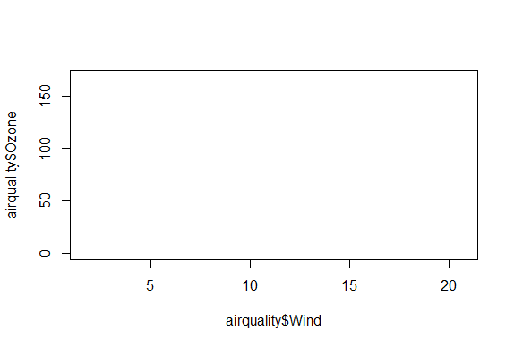
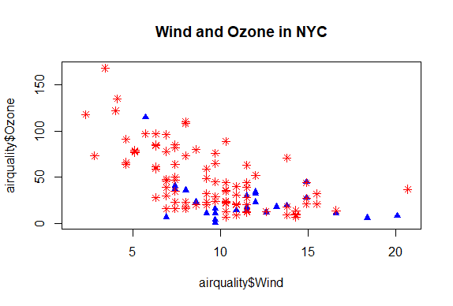
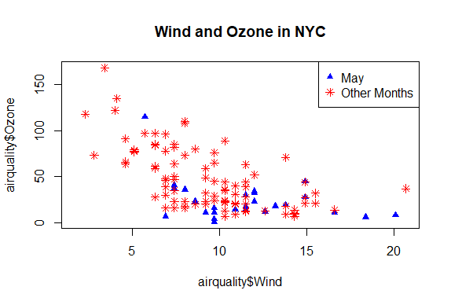
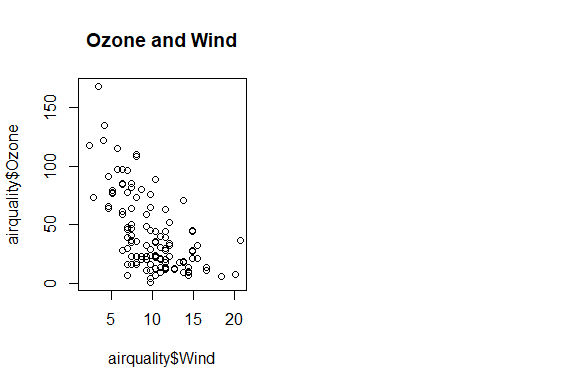
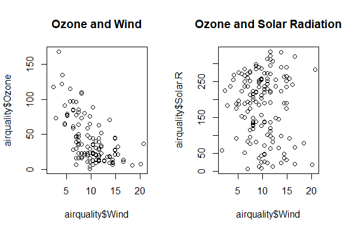

Base Plotting System
library(swirl)
swirl()
| Welcome to swirl! Please sign in. If you've been here before, use the same name as you did
| then. If you are new, call yourself something unique.
What shall I call you? Krishnakanth Allika
| Please choose a course, or type 0 to exit swirl.
1: Exploratory Data Analysis
2: Take me to the swirl course repository!
Selection: 1
| Please choose a lesson, or type 0 to return to course menu.
1: Principles of Analytic Graphs 2: Exploratory Graphs
3: Graphics Devices in R 4: Plotting Systems
5: Base Plotting System 6: Lattice Plotting System
7: Working with Colors 8: GGPlot2 Part1
9: GGPlot2 Part2 10: GGPlot2 Extras
11: Hierarchical Clustering 12: K Means Clustering
13: Dimension Reduction 14: Clustering Example
15: CaseStudy
Selection: 5
| | 0%
| Base_Plotting_System. (Slides for this and other Data Science courses may be found at
| github https://github.com/DataScienceSpecialization/courses/. If you care to use them,
| they must be downloaded as a zip file and viewed locally. This lesson corresponds to
| 04_ExploratoryAnalysis/PlottingBase.)
...
|= | 2%
| In another lesson, we gave you an overview of the three plotting systems in R. In this
| lesson we'll focus on the base plotting system and talk more about how you can exploit all
| its many parameters to get the plot you want. We'll focus on using the base plotting
| system to create graphics on the screen device rather than another graphics device.
...
|=== | 3%
| The core plotting and graphics engine in R is encapsulated in two packages. The first is
| the graphics package which contains plotting functions for the "base" system. The
| functions in this package include plot, hist, boxplot, barplot, etc. The second package is
| grDevices which contains all the code implementing the various graphics devices, including
| X11, PDF, PostScript, PNG, etc.
...
|==== | 5%
| Base graphics are often constructed piecemeal, with each aspect of the plot handled
| separately through a particular function call. Usually you start with a plot function
| (such as plot, hist, or boxplot), then you use annotation functions (text, abline, points)
| to add to or modify your plot.
...
|===== | 6%
| Before making a plot you have to determine where the plot will appear and what it will be
| used for. Is there a large amount of data going into the plot? Or is it just a few
| points? Do you need to be able to dynamically resize the graphic?
...
|====== | 8%
| What do you think is a disadvantage of the Base Plotting System?
1: It mirrors how we think of building plots and analyzing data
2: You can't go back once a plot has started
3: It's intuitive and exploratory
4: A complicated plot is a series of simple R commands
Selection: 2
| That's a job well done!
|======== | 9%
| Yes! The base system is very intuitive and easy to use. You can't go backwards, though,
| say, if you need to readjust margins or have misspelled a caption. A finished plot will be
| a series of R commands, so it's difficult to translate a finished plot into a different
| system.
...
|========= | 11%
| Calling a basic routine such as plot(x, y) or hist(x) launches a graphics device (if one
| is not already open) and draws a new plot on the device. If the arguments to plot or hist
| are not of some special class, then the default method is called.
...
|========== | 12%
| As you'll see, most of the base plotting functions have many arguments, for example,
| setting the title, labels of axes, plot character, etc. Some of the parameters can be set
| when you call the function or they can be added later in a separate function call.
...
|=========== | 14%
| Now we'll go through some quick examples of basic plotting before we delve into gory
| details. We'll use the dataset airquality (part of the library datasets) which we've
| loaded for you. This shows ozone and other air measurements for New York City for 5 months
| in 1973.
...
|============= | 15%
| Use the R command head with airquality as an argument to see what the data looks like.
head(airquality)
Ozone Solar.R Wind Temp Month Day
1 41 190 7.4 67 5 1
2 36 118 8.0 72 5 2
3 12 149 12.6 74 5 3
4 18 313 11.5 62 5 4
5 NA NA 14.3 56 5 5
6 28 NA 14.9 66 5 6
| Your dedication is inspiring!
|============== | 17%
| We see the dataset contains 6 columns of data. Run the command range with two arguments.
| The first is the ozone column of airquality, specified by airquality\$Ozone, and the second
| is the boolean na.rm set equal to TRUE. If you don't specify this second argument, you
| won't get a meaningful result.
range(airquality\$Ozone,na.rm=TRUE)
[1] 1 168
| Perseverance, that's the answer.
|=============== | 18%
| So the measurements range from 1 to 168. First we'll do a simple histogram of this ozone
| column to show the distribution of measurements. Use the R command hist with the argument
| airquality\$Ozone.
hist(airquality\$Ozone)

| You're the best!
|================ | 20%
| Simple, right? R put a title on the histogram and labeled both axes for you. What is the
| most frequent count?
1: Under 25
2: Over 100
3: Over 150
4: Between 60 and 75
Selection: 1
| Great job!
|================== | 21%
| Next we'll do a boxplot. First, though, run the R command table with the argument
| airquality\$Month.
table(airquality\$Month)
5 6 7 8 9
31 30 31 31 30
| Excellent work!
|=================== | 23%
| We see that the data covers 5 months, May through September. We'll want a boxplot of ozone
| as a function of the month in which the measurements were taken so we'll use the R formula
| Ozone~Month as the first argument of boxplot. Our second argument will be airquality, the
| dataset from which the variables of the first argument are taken. Try this now.
boxplot(Ozone~Month,airquality)

| Keep up the great work!
|==================== | 24%
| Note that boxplot, unlike hist, did NOT specify a title and axis labels for you
| automatically.
...
|===================== | 26%
| Let's call boxplot again to specify labels. (Use the up arrow to recover the previous
| command and save yourself some typing.) We'll add more arguments to the call to specify
| labels for the 2 axes. Set xlab equal to "Month" and ylab equal to "Ozone (ppb)". Specify
| col.axis equal to "blue" and col.lab equal to "red". Try this now.
boxplot(Ozone~Month,airquality,xlab="Month",ylab="Ozone (ppb)",col.axis="blue",col.lab="red")

| All that practice is paying off!
|======================= | 27%
| Nice colors, but still no title. Let's add one with the R command title. Use the argument
| main set equal to the string "Ozone and Wind in New York City".
title(main="Ozone and Wind in New York City")

| Nice work!
|======================== | 29%
| Now we'll show you how to plot a simple two-dimensional scatterplot using the R function
| plot. We'll show the relationship between Wind (x-axis) and Ozone (y-axis). We'll use the
| function plot with those two arguments (Wind and Ozone, in that order). To save some
| typing, though, we'll call the R command with using 2 arguments. The first argument of
| with will be airquality, the dataset containing Wind and Ozone; the second argument will
| be the call to plot. Doing this allows us to avoid using the longer notation, e.g.,
| airquality\$Wind. Try this now.
with(airquality,plot(Wind,Ozone))

| Perseverance, that's the answer.
|========================= | 30%
| Note that plot generated labels for the x and y axes but no title.
...
|========================== | 32%
| Add one now with the R command title. Use the argument main set equal to the string "Ozone
| and Wind in New York City". (You can use the up arrow to recover the command if you don't
| want to type it.)
title(main="Ozone and Wind in New York City")

| Perseverance, that's the answer.
|============================ | 33%
| The basic plotting parameters are documented in the R help page for the function par. You
| can use par to set parameters OR to find out what values are already set. To see just how
| much flexibility you have, run the R command length with the argument par() now.
length(par())
[1] 72
| All that hard work is paying off!
|============================= | 35%
| So there are a boatload (72) of parameters that par() gives you access to. Run the R
| function names with par() as its argument to see what these parameters are.
names(par())
[1] "xlog" "ylog" "adj" "ann" "ask" "bg" "bty"
[8] "cex" "cex.axis" "cex.lab" "cex.main" "cex.sub" "cin" "col"
[15] "col.axis" "col.lab" "col.main" "col.sub" "cra" "crt" "csi"
[22] "cxy" "din" "err" "family" "fg" "fig" "fin"
[29] "font" "font.axis" "font.lab" "font.main" "font.sub" "lab" "las"
[36] "lend" "lheight" "ljoin" "lmitre" "lty" "lwd" "mai"
[43] "mar" "mex" "mfcol" "mfg" "mfrow" "mgp" "mkh"
[50] "new" "oma" "omd" "omi" "page" "pch" "pin"
[57] "plt" "ps" "pty" "smo" "srt" "tck" "tcl"
[64] "usr" "xaxp" "xaxs" "xaxt" "xpd" "yaxp" "yaxs"
[71] "yaxt" "ylbias"
| You got it right!
|============================== | 36%
| Variety is the spice of life. You might recognize some of these such as col and lwd from
| previous swirl lessons. You can always run ?par to see what they do. For now, run the
| command par()\$pin and see what you get.
par()\$pin
[1] 4.520417 1.805833
| You got it!
|=============================== | 38%
| Alternatively, you could have gotten the same result by running par("pin") or par('pin')).
| What do you think these two numbers represent?
1: Coordinates of the center of the plot window
2: Random numbers
3: A confidence interval
4: Plot dimensions in inches
Selection: 4
| All that hard work is paying off!
|================================= | 39%
| Now, run the command par("fg") or or par('fg') or par()\$fg and see what you get.
par("fg")
[1] "black"
| You nailed it! Good job!
|================================== | 41%
| It gave you a color, right? Since par()\$fg specifies foreground color, what do you think
| par()\\$bg specifies?
1: Beautiful color
2: blue-green
3: Better color
4: Background color
Selection: 4
| You are amazing!
|=================================== | 42%
| Many base plotting functions share a set of parameters. We'll go through some of the more
| commonly used ones now. See if you can tell what they do from their names.
...
|==================================== | 44%
| What do you think the graphical parameter pch controls?
1: pc help
2: plot character
3: point control height
4: picture characteristics
Selection: 2
| You are doing so well!
|=================================== | 45%
| The plot character default is the open circle, but it "can either be a single
| character or an integer code for one of a set of graphics symbols." Run the command
| par("pch") to see the integer value of the default. When you need to, you can use
| R's Documentation (?pch) to find what the other values mean.
par("pch")
[1] 1
| You're the best!
|==================================== | 47%
| So 1 is the code for the open circle. What do you think the graphical parameters lty
| and lwd control respectively?
1: line length and width
2: line slope and intercept
3: line type and width
4: line width and type
Selection: 3
| You nailed it! Good job!
|===================================== | 48%
| Run the command par("lty") to see the default line type.
par("lty")
[1] "solid"
| Excellent job!
|====================================== | 50%
| So the default line type is solid, but it can be dashed, dotted, etc. Once again,
| R's ?par documentation will tell you what other line types are available. The line
| width is a positive integer; the default value is 1.
...
|======================================== | 52%
| We've seen a lot of examples of col, the plotting color, specified as a number,
| string, or hex code; the colors() function gives you a vector of colors by name.
...
|========================================= | 53%
| What do you think the graphical parameters xlab and ylab control respectively?
1: labels for the y- and x- axes
2: labels for the x- and y- axes
Selection: 2
| You are quite good my friend!
|========================================== | 55%
| The par() function is used to specify global graphics parameters that affect all
| plots in an R session. (Use dev.off or plot.new to reset to the defaults.) These
| parameters can be overridden when specified as arguments to specific plotting
| functions. These include las (the orientation of the axis labels on the plot), bg
| (background color), mar (margin size), oma (outer margin size), mfrow and mfcol
| (number of plots per row, column).
...
|=========================================== | 56%
| The last two, mfrow and mfcol, both deal with multiple plots in that they specify
| the number of plots per row and column. The difference between them is the order in
| which they fill the plot matrix. The call mfrow will fill the rows first while mfcol
| fills the columns first.
...
|============================================ | 58%
| So to reiterate, first call a basic plotting routine. For instance, plot makes a
| scatterplot or other type of plot depending on the class of the object being
| plotted.
...
|============================================== | 59%
| As we've seen, R provides several annotating functions. Which of the following is
| NOT one of them?
1: title
2: hist
3: lines
4: text
5: points
Selection: 2
| Your dedication is inspiring!
|=============================================== | 61%
| So you can add text, title, points, and lines to an existing plot. To add lines, you
| give a vector of x values and a corresponding vector of y values (or a 2-column
| matrix); the function lines just connects the dots. The function text adds text
| labels to a plot using specified x, y coordinates.
...
|================================================ | 62%
| The function title adds annotations. These include x- and y- axis labels, title,
| subtitle, and outer margin. Two other annotating functions are mtext which adds
| arbitrary text to either the outer or inner margins of the plot and axis which adds
| axis ticks and labels. Another useful function is legend which explains to the
| reader what the symbols your plot uses mean.
...
|================================================= | 64%
| Before we close, let's test your ability to make a somewhat complicated scatterplot.
| First run plot with 3 arguments. airquality\$Wind, airquality\\$Ozone, and type set
| equal to "n". This tells R to set up the plot but not to put the data in it.
plot(airquality\$Wind,airquality\\$Ozone,type="n")
There were 12 warnings (use warnings() to see them)

| You got it!
|================================================== | 65%
| Now for the test. (You might need to check R's documentation for some of these.) Add
| a title with the argument main set equal to the string "Wind and Ozone in NYC"
title(main = "Wind and Ozone in NYC")

| That's the answer I was looking for.
|=================================================== | 67%
| Now create a variable called may by subsetting airquality appropriately. (Recall
| that the data specifies months by number and May is the fifth month of the year.)
may<-subset(airquality,Month==5)
| All that practice is paying off!
|===================================================== | 68%
| Now use the R command points to plot May's wind and ozone (in that order) as solid
| blue triangles. You have to set the color and plot character with two separate
| arguments. Note we use points because we're adding to an existing plot.
points(may\$Wind,may\\$Ozone,col="blue",pch=17)

| That's a job well done!
|====================================================== | 70%
| Now create the variable notmay by subsetting airquality appropriately.
notmay<-subset(airquality,Month!=5)
| Keep up the great work!
|======================================================= | 71%
| Now use the R command points to plot these notmay's wind and ozone (in that order)
| as red snowflakes.
points(notmay\$Wind,notmay\\$Ozone,col="red",pch=8)

| Your dedication is inspiring!
|======================================================== | 73%
| Now we'll use the R command legend to clarify the plot and explain what it means.
| The function has a lot of arguments, but we'll only use 4. The first will be the
| string "topright" to tell R where to put the legend. The remaining 3 arguments will
| each be 2-long vectors created by R's concatenate function, e.g., c(). These
| arguments are pch, col, and legend. The first is the vector (17,8), the second
| ("blue","red"), and the third ("May","Other Months"). Try it now.
legend("topright",pch=c(17,8),col=c("blue","red"),legend=c("May","Other Months"))

| That's a job well done!
|========================================================= | 74%
| Now add a vertical line at the median of airquality\$Wind. Make it dashed (lty=2)
| with a width of 2.
abline(v=median(airquality\$Wind),lty=2,lwd=2)

| You are really on a roll!
|========================================================== | 76%
| Use par with the parameter mfrow set equal to the vector (1,2) to set up the plot
| window for two plots side by side. You won't see a result.
par(mfrow=c(1,2))
| You are doing so well!
|============================================================ | 77%
| Now plot airquality\$Wind and airquality\\$Ozone and use main to specify the title
| "Ozone and Wind".
plot(airquality\$Wind,airquality\\$Ozone,main="Ozone and Wind")

| Perseverance, that's the answer.
|============================================================= | 79%
| Now for the second plot.
...
|============================================================== | 80%
| Plot airquality\$Ozone and airquality\\$Solar.R and use main to specify the title
| "Ozone and Solar Radiation".
plot(airquality\$Ozone,airquality\\$Solar.R,main="Ozone and Solar Radiation")

| That's correct!
|=============================================================== | 82%
| Now for something more challenging.
...
|================================================================ | 83%
| This one with 3 plots, to illustrate inner and outer margins. First, set up the plot
| window by typing par(mfrow = c(1, 3), mar = c(4, 4, 2, 1), oma = c(0, 0, 2, 0))
par(mfrow = c(1, 3), mar = c(4, 4, 2, 1), oma = c(0, 0, 2, 0))
| Perseverance, that's the answer.
|================================================================= | 85%
| Margins are specified as 4-long vectors of integers. Each number tells how many
| lines of text to leave at each side. The numbers are assigned clockwise starting at
| the bottom. The default for the inner margin is c(5.1, 4.1, 4.1, 2.1) so you can see
| we reduced each of these so we'll have room for some outer text.
...
|================================================================== | 86%
| The first plot should be familiar. Plot airquality\$Wind and airquality\\$Ozone with
| the title (argument main) as "Ozone and Wind".
plot(airquality\$Wind,airquality\\$Ozone,main="Ozone and Wind")

| You nailed it! Good job!
|==================================================================== | 88%
| The second plot is similar.
...
|===================================================================== | 89%
| Plot airquality\$Solar.R and airquality\\$Ozone with the title (argument main) as
| "Ozone and Solar Radiation".
plot(airquality\$Solar.R,airquality\\$Ozone,main="Ozone and Solar Radiation")

| That's a job well done!
|====================================================================== | 91%
| Now for the final panel.
...
|======================================================================= | 92%
| Plot airquality\$Temp and airquality\\$Ozone with the title (argument main) as "Ozone
| and Temperature".
plot(airquality\$Temp,airquality\\$Ozone,main="Ozone and Temperature")

| You got it!
|======================================================================== | 94%
| Now we'll put in a title.
...
|========================================================================== | 95%
| Since this is the main title, we specify it with the R command mtext. Call mtext
| with the string "Ozone and Weather in New York City" and the argument outer set
| equal to TRUE.
mtext("Ozone and Weather in New York City",outer=TRUE)

| That's correct!
|=========================================================================== | 97%
| Voila! Beautiful, right?
...
|============================================================================ | 98%
| Congrats! You've weathered this lesson nicely and passed out of the No!zone.
...
|=============================================================================| 100%
| Would you like to receive credit for completing this course on Coursera.org?
1: No
2: Yes
Selection: 2
What is your email address? xxxxxx@xxxxxxxxxxxx
What is your assignment token? xXxXxxXXxXxxXXXx
Grade submission succeeded!
| All that practice is paying off!
| You've reached the end of this lesson! Returning to the main menu...
| Please choose a course, or type 0 to exit swirl.
1: Exploratory Data Analysis
2: Take me to the swirl course repository!
Selection: 0
| Leaving swirl now. Type swirl() to resume.
Last updated 2020-05-04 20:05:26.618647 IST
Comments